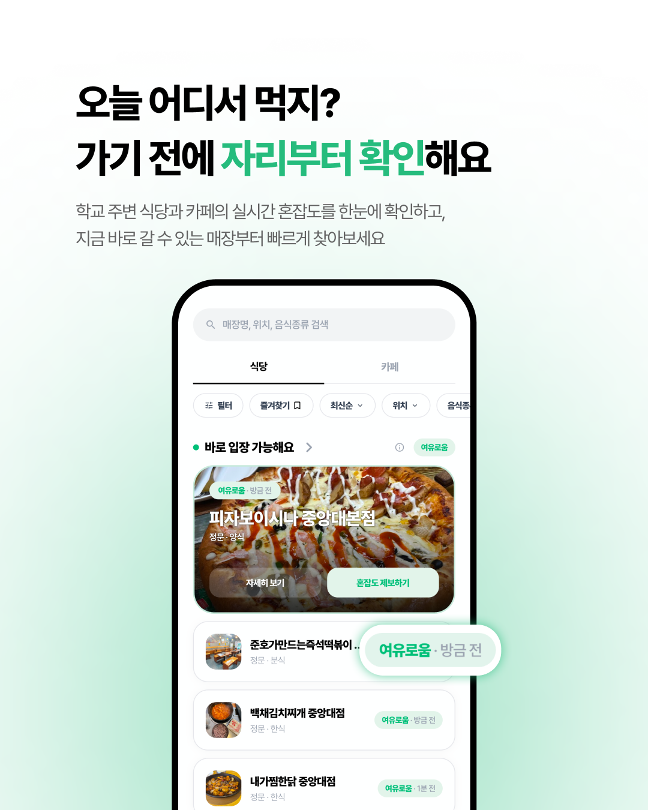
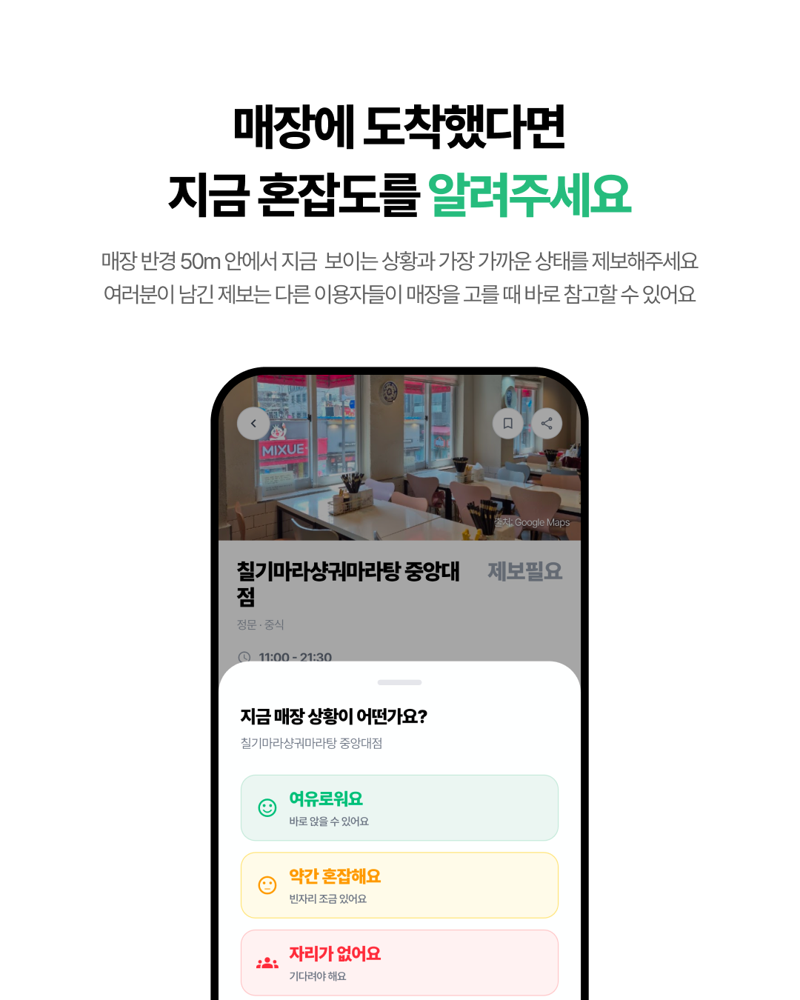
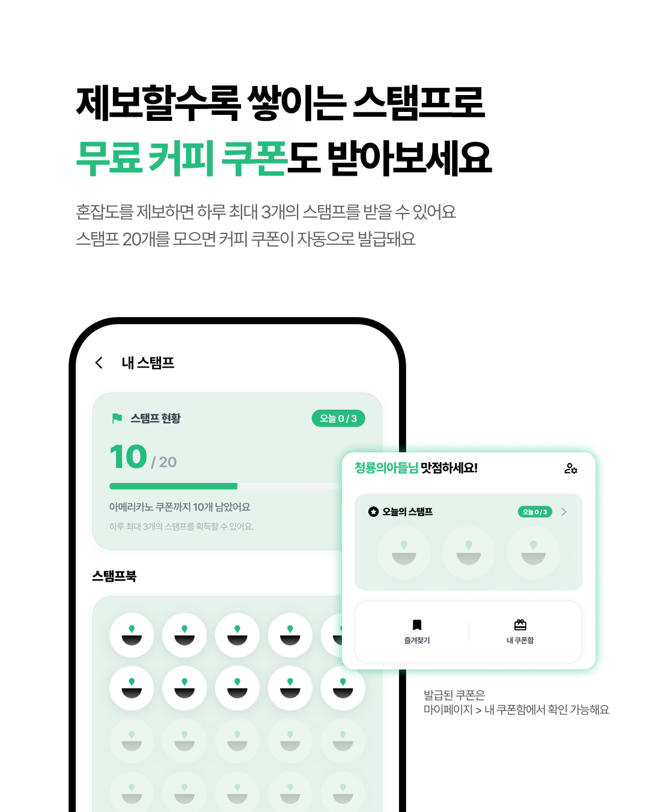
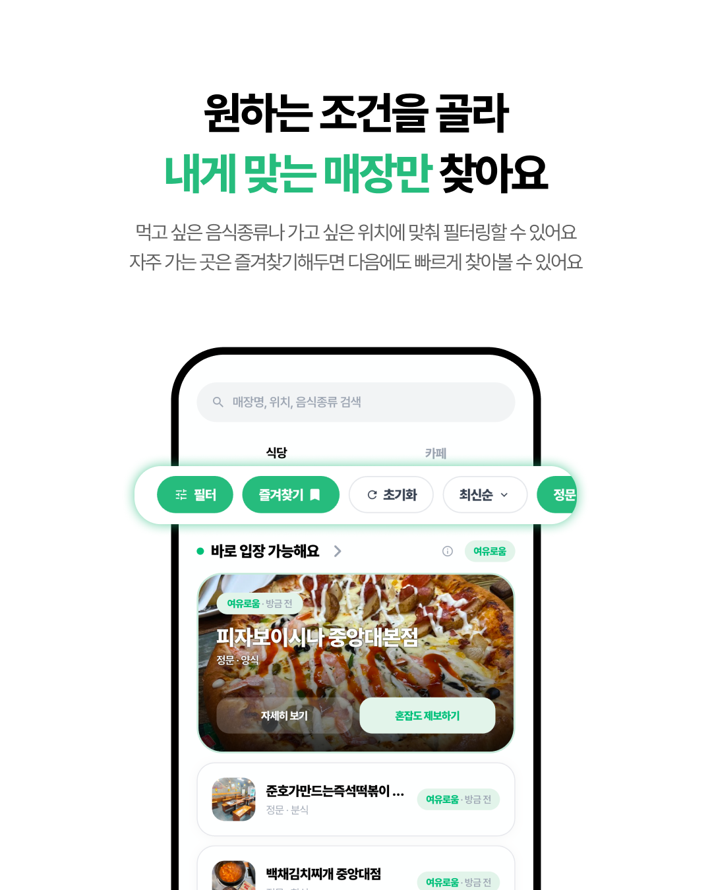
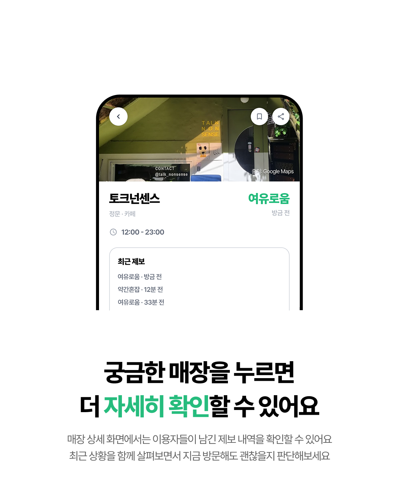
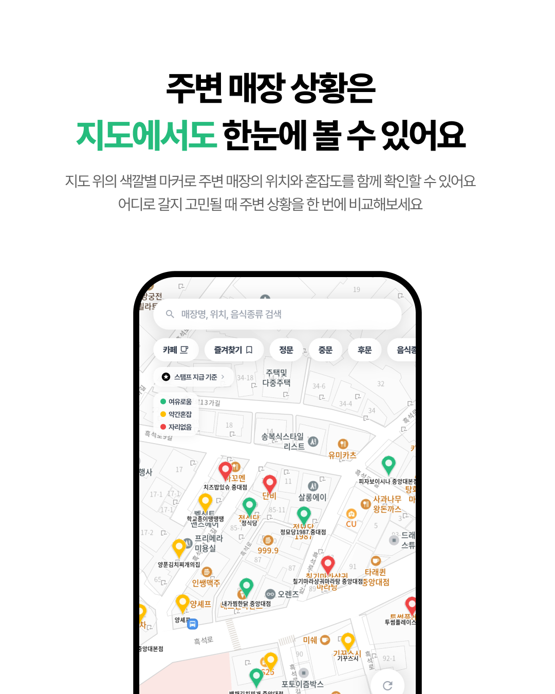

CAMPUS LUNCH
실시간 혼잡도에서 시작해,
다시 찾게 되는 대학가 식사 서비스로 확장했습니다.
학생들의 식당 선택 문제를 발견하고, 사용자 조사부터 서비스 기획, 브랜딩,
UX 설계, 프론트엔드 구현, 출시까지 직접 참여했습니다.
Problem
점심시간 식당 혼잡으로 방문을 포기하는 상황에서 문제를 발견했습니다.
이후 대학생 대상 사용자 조사를 통해 해당 불편이 반복적으로 발생하고 있으며,
실시간 혼잡도 정보에 대한 수요도 높다는 점을 확인했습니다.

Core Product
혼잡도 정보는 최신성이 유지될 때 가치가 생깁니다. 그래서 사용자가 현장에서 꾸준히 제보에 참여할 수 있는 구조를 설계했습니다.
사용자 조사에서 지속적인 보상이 제공될 경우 제보에 참여할 의향이 있다는 응답이 94.8%로 나타났습니다.
이를 바탕으로 제보 행동과 리워드가 자연스럽게 연결되는 구조를 기획했습니다.


Product Expansion
혼잡도 확인만으로는 사용 목적이 짧게 끝날 가능성이 컸습니다.
그래서 대학가에서 식당을 찾는 상황 자체를 더 넓게 다루는 방향으로 기능을 확장했습니다.
UX Decisions



Build & Iteration
서비스 기획, 키컬러·로고 등 브랜드 아이덴티티 설계, UI/UX 설계와 함께 Claude Code를 활용해 프론트엔드 구현을 직접 담당했습니다.
2인 개발 과정에서 백엔드 담당 팀원과 실제 동작 방식, 데이터 처리, 예외 상황을 조율했고,
사용자 테스트를 반복하며 화면과 기능을 수정했습니다.
Launch
사용자 조사, 서비스 기획, 브랜딩, UX 설계, 개발, 테스트를 거쳐 실제 앱 출시까지 진행했습니다.